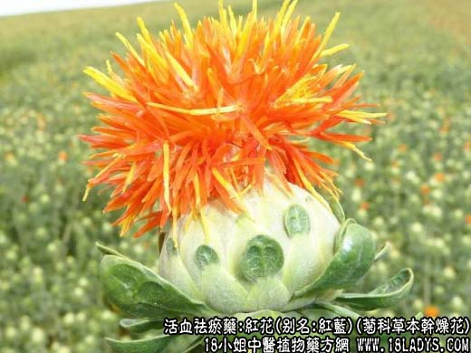
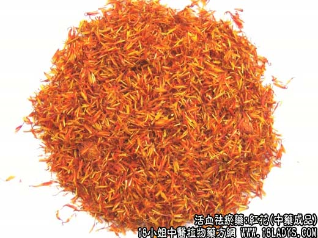

【中药概述】
红花，别名：红蓝、红花草、红花菜、红蓝花、刺红花、草红花、黄蓝，为菊科草本植物红花的干燥花。辛，温。归心、肝经。
1．用于血滞经闭、月经不调、痛经、产后瘀血腹痛、恶露不行及症瘕等，如（桃红四物汤）、（<活法机要>红花汤）。
2．用于风湿痹痛，跌打损伤等，常与桃仁，乳香，没药，或与肉桂，川乌，草乌等同用。
3．用于斑疹发不畅，麻疹出而复收，或热郁血滞，斑疹色不红活等，常与当归，紫草，大青叶，牛蒡子等活血、解毒药同用。如（<麻科活人全书>当归红花饮）。
【药物形态】
本品为不带子房的管状花，长1～2cm。表面红黄色或红色。花冠筒细长，先端5裂，裂片呈狭条形，长5～8mm；雄蕊5，花药聚合成筒状，黄白色；柱头长圆柱形，顶端微分叉。质柔软。气微香，味微苦
【药效鉴别】
红花多用则作用较强，可破血逐瘀；少用则作用温和，可流通血脉，有去瘀生新的功效。故前人有“多用则破血，少用则养血”之说。以其活血而长于通经，故为活血调经之要药。
1．论红花活血、行血、和血、生血之功①缪希雍：“红蓝花，乃行血之要药。其主产后血晕口噤者，缘恶血不下，逆上冲心，故神昏而晕及口噤。入心入肝，使恶血下行，则晕与口噤自止。腹内绞痛，由于恶血不尽，胎死腹中，非行血活血则不下；瘀行则血活，故能止绞痛，下死胎也。凡虫药之毒，必伤血分，此药能行血，血活则毒可解。”(《本草经疏》)②倪朱谟：“红花，破血、行血、和血、调血之药也。主胎产百病，因血为患；或血烦血晕，神昏不语；或恶露抢心，脐腹绞痛；或沥浆难生，蹊距不下；或胞衣不落，子死腹中，是皆临产诸证，非红花不能治。若产后血晕，口噤指搦；或邪入血室，谵语发狂；或血闷内胀，僵仆如死，是皆产后诸证，非红花不能定。又如经闭不通而寒热交作，或过期腹痛而紫黑淋漓，或跌扑损伤而气血瘀积，或疮疡痛痒而肿溃不安，是皆气血不和之证，非红花不能调。”(《本草汇言》)
2．论用量对红花功效的影响①朱丹溪：“多用破留血，少用养血。”(《本草衍义补遗》)②陈嘉谟：“多用则破血通经，酒煮方妙；少用则入心养血，水煎却宜。”(《本草蒙筌》)③贾所学：“红花，善通利经脉，为血中气药，能泻而又能补，各有妙义。若多用三四钱，则过于辛温，使血走散。若少用七八分，取其味辛，以疏肝气，色赤以助血海，大补血虚，此其调畅而和血也；若止用二三分，入心取其色赤以配心血，又借辛味解散心经邪火，令血调和，此其滋养而生血也；分量多寡之义，岂浅鲜哉。”（《药品化义》）
【应用与配伍】
1. 用于血滞经闭，痛经，产后瘀滞腹痛等证。本品辛散温通，专入血分，功能活血祛瘀通调经脉。常配桃仁、当归、川芎等相须而用。治经闭，配当归、莪术、肉桂等同用，如膈下逐瘀汤；治痛经，可配赤芍、延胡索、香附等，以理气活血止痛。亦可单用，如《金匮要略》红蓝花酒，即本品加酒煎服，治腹中血气刺痛。
2. 用于癥瘕积聚，心腹瘀痛及跌打损伤，血脉闭塞紫肿疼痛等。本品能活血祛瘀消漱，通畅血脉，消肿止痛。治癥积，配三棱、莪术等；治跌打损伤，瘀滞肿痛，配苏木、乳香、没药等；或用红花酊、红花油涂揍；治心脉瘀阻、胸痹心痛，配桂枝，瓜娄、丹参等；近代有单用本品，以片剂或注射剂治冠心病，对缓解心绞痛及改善心电图有一定疗效；以红花注射液静滴，治脑血栓及血栓闭塞性脉管炎；用治血栓闭塞性脉管炎也可配当归、赤芍、乳香、没药等同用。
3. 用于斑疹色暗，热郁血瘀者，取本品活血化斑之功，以番红花为优，因其性凉有凉皿解毒之功。常配当归、紫草、大青叶等以活血凉血泄热解毒。如《麻科活人书》当归红花饮。近代有以红花注射液肌注，治多形性红斑者。
【药理作用】
1. 对平滑肌的作用：煎剂对小鼠、豚鼠、兔、猫与狗的离体子宫及静脉注射0.24g／kg对狗等动物在体子宫和上述动物的离体肠管均呈兴奋作用，使子宫产生紧张性及节律性收缩，对已孕子宫更为明显。
2. 对心血管的作用：对蟾蜍离体心脏与兔在位心脏，小剂量煎剂可增强心缩力，大剂量有抑制作用。水提取液和红花注射液能使在位犬心冠脉流量增加，提高小鼠耐缺氧能力，增加小鼠心肌营养性血流量。水提取液能明显降低麻醉猫、犬的血压。
3. 对血液的影响：红花注射液、水煎剂、红花甙、红花醌甙对大鼠体外血栓形成有明显抑制效果；水煎剂大鼠试验尚有抑制血小板凝集及抗内、外凝血的功能。
4. 免疫作用：红花多糖以小鼠进行试验，能促进淋巴细胞转化，增加脾细胞对羊红细胞空斑形成细胞数，对抗强的松龙的免疫抑制作用。
【化学成分】含红色、黄色的色素，如红花甙、前红花甙、红花醌甙、新红花甙、红花黄色素A及B等。又含多酚类成分如绿原酸、咖啡酸、儿茶酚、焦性儿茶酚等。还含挥发性成分80余种。
【用量用法】3——10g，水煎服，或入剂。
【使用注意】孕妇忌服，有出血倾向者不宜多用。
本文解释权归介绍中草药名称的中药大全所有，本文地址：https://www.daquan.com/post/1991.html